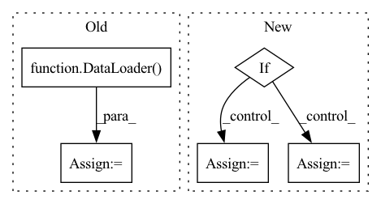

Pattern ID :39591
Before Change
dl_test = dataset.prepare("test", col_set=["feature", "label"], data_key=DataHandlerLP.DK_I)
dl_test.config(fillna_type="ffill+bfill")
test_loader = DataLoader( dl_test, batch_size=self.batch_size, num_workers=self.n_jobs)
self.model.eval()
preds = []
After Change
for begin in range(sample_num)[:: self.batch_size]:
if sample_num - begin < self.batch_size:
end = sample_num
else:
end = begin + self.batch_size
x_batch = torch.from_numpy(x_values[begin:end]).float().to(self.device)
In pattern: SUPERPATTERN
Frequency: 3
Non-data size: 5
Instances Fragment ID: 112668870
Project Name: microsoft/qlib
Commit Name: bee031af68cd0864c8329de13608c2d4feb58fc1
Time: 2021-07-21
Author: yl3851@uw.edu
File Name: qlib/contrib/model/pytorch_localformer.py
M Class Name: LocalformerModel
N Class Name: LocalformerModel
M Method Name: predict(3)
N Method Name: predict(2)
M Parent Class: Model
N Parent Class: Model
M File Name: qlib/contrib/model/pytorch_localformer.py
N File Name: qlib/contrib/model/pytorch_localformer.py
M Start Line: 209
M End Line: 223
N Start Line: 223
N End Line: 244
Before Change
self.learning_rate = learning_rate
self.local_steps = local_steps
self.trainloader = DataLoader( train_data, self.batch_size, drop_last=True)
self.testloader = DataLoader(test_data, self.batch_size, drop_last=True)
self.trainloaderfull = DataLoader(train_data, self.batch_size, drop_last=False)
self.testloaderfull = DataLoader(test_data, self.batch_size, drop_last=False)
self.iter_trainloader = iter(self.trainloader)After Change
// check BatchNorm
self.has_BatchNorm = False
for layer in self.model.children():
if isinstance(layer, nn.BatchNorm2d):
self.has_BatchNorm = True
break
self.train_slow = kwargs["train_slow"]
self.send_slow = kwargs["send_slow"]
self.train_time_cost = {"num_rounds": 0, "total_cost": 0.0}
self.send_time_cost = {"num_rounds": 0, "total_cost": 0.0}
self.privacy = args.privacy
self.dp_sigma = args.dp_sigma
self.sample_rate = self.batch_size / self.train_samples
Fragment ID: 112668885
Project Name: tsingz0/pfl-non-iid
Commit Name: 4f394efe04f30dbd3cab4278467631854f997903
Time: 2022-01-14
Author: 2719584131@qq.com
File Name: system/flcore/clients/clientbase.py
M Class Name: Client
N Class Name: Client
M Method Name: __init__(5)
N Method Name: __init__(11)
M Parent Class: object
N Parent Class: object
M File Name: system/flcore/clients/clientbase.py
N File Name: system/flcore/clients/clientbase.py
M Start Line: 12
M End Line: 32
N Start Line: 19
N End Line: 46
Before Change
dl_test = dataset.prepare("test", col_set=["feature", "label"], data_key=DataHandlerLP.DK_I)
dl_test.config(fillna_type="ffill+bfill")
test_loader = DataLoader( dl_test, batch_size=self.batch_size, num_workers=self.n_jobs)
self.model.eval()
preds = []
After Change
sample_num = x_values.shape[0]
preds = []
for begin in range(sample_num)[:: self.batch_size]:
if sample_num - begin < self.batch_size:
end = sample_num
else:
end = begin + self.batch_size
x_batch = torch.from_numpy(x_values[begin:end]).float().to(self.device)
Fragment ID: 112668868
Project Name: microsoft/qlib
Commit Name: bee031af68cd0864c8329de13608c2d4feb58fc1
Time: 2021-07-21
Author: yl3851@uw.edu
File Name: qlib/contrib/model/pytorch_localformer.py
M Class Name: LocalformerModel
N Class Name: LocalformerModel
M Method Name: predict(3)
N Method Name: predict(2)
M Parent Class: Model
N Parent Class: Model
M File Name: qlib/contrib/model/pytorch_localformer.py
N File Name: qlib/contrib/model/pytorch_localformer.py
M Start Line: 209
M End Line: 223
N Start Line: 223
N End Line: 244
Before Change
dl_test = dataset.prepare("test", col_set=["feature", "label"], data_key=DataHandlerLP.DK_I)
dl_test.config(fillna_type="ffill+bfill")
test_loader = DataLoader( dl_test, batch_size=self.batch_size, num_workers=self.n_jobs)
self.model.eval()
preds = []
After Change
sample_num = x_values.shape[0]
preds = []
for begin in range(sample_num)[:: self.batch_size]:
if sample_num - begin < self.batch_size:
end = sample_num
else:
end = begin + self.batch_size
x_batch = torch.from_numpy(x_values[begin:end]).float().to(self.device)
Fragment ID: 112668892
Project Name: microsoft/qlib
Commit Name: bee031af68cd0864c8329de13608c2d4feb58fc1
Time: 2021-07-21
Author: yl3851@uw.edu
File Name: qlib/contrib/model/pytorch_transformer.py
M Class Name: TransformerModel
N Class Name: TransformerModel
M Method Name: predict(3)
N Method Name: predict(2)
M Parent Class: Model
N Parent Class: Model
M File Name: qlib/contrib/model/pytorch_transformer.py
N File Name: qlib/contrib/model/pytorch_transformer.py
M Start Line: 206
M End Line: 220
N Start Line: 222
N End Line: 243